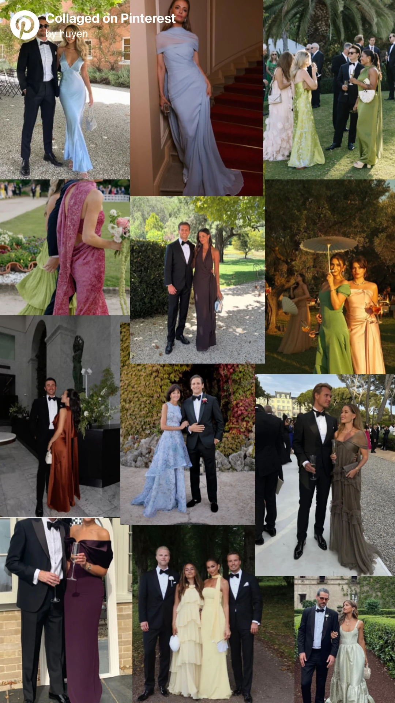
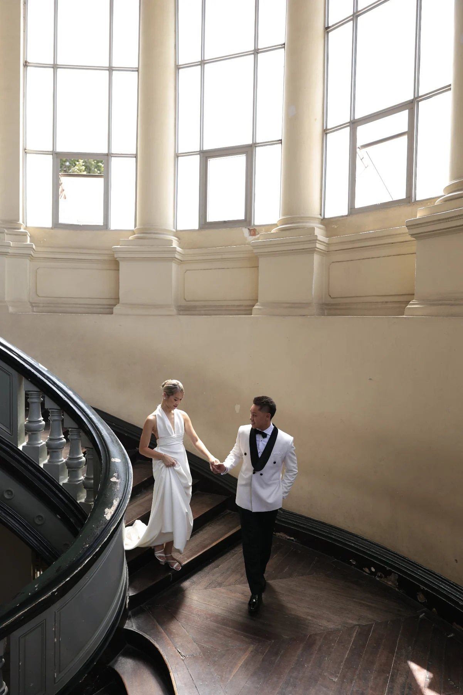
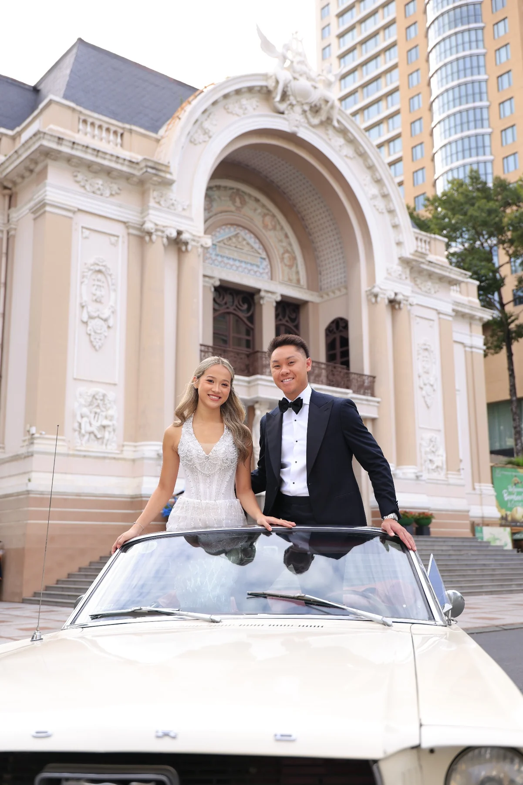
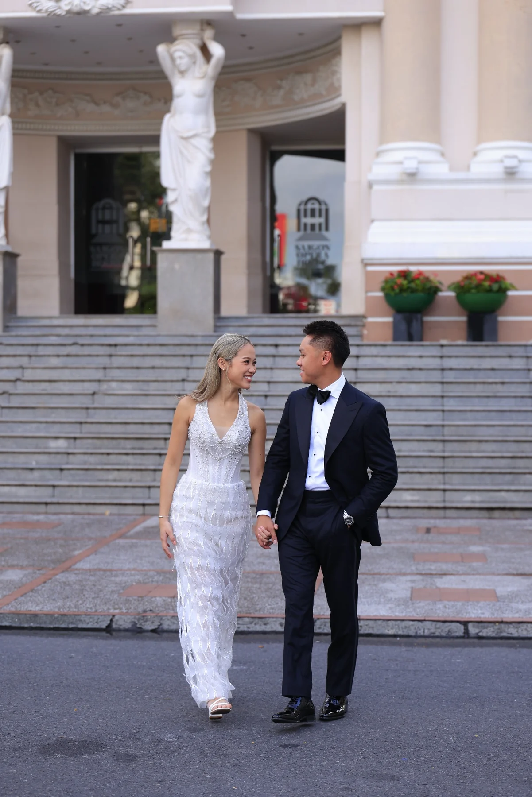
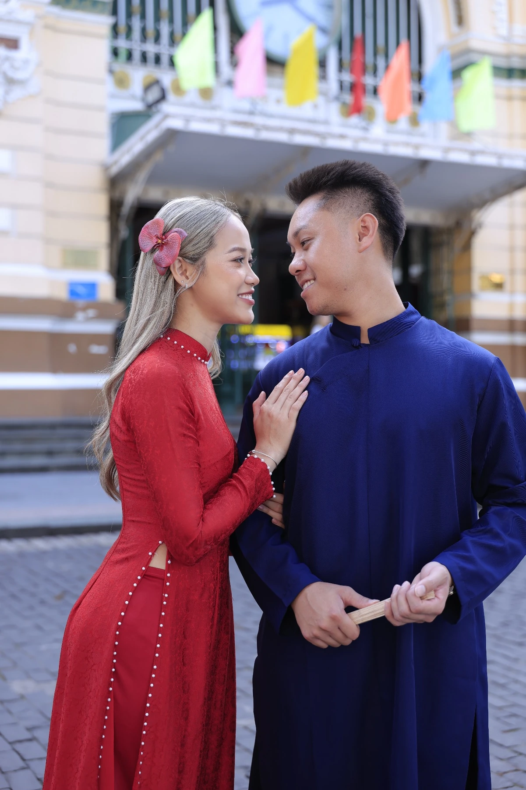

01
2:00 PM
Nuptial Mass
Christ the King Catholic Church
1112 Eagle Drive
Fort Worth, TX 76111
Black tie optional
View mapTogether with their families
Tap the seal to open
Together with our families
we invite you to celebrate the beginning of our forever
Saturday · October 24, 2026
Wedding day
One beautiful day, three places to celebrate.
2:00 PM
Christ the King Catholic Church
1112 Eagle Drive
Fort Worth, TX 76111
Black tie optional
View map6:00 PM
Dallas Museum of Art
Sculpture Garden
1717 N Harwood St
Dallas, TX 75201
Dinner & dancing to follow
View map10:30 PM
KILO Coffee
6600 Snider Plaza
Dallas, TX 75205
Join us for one more toast
View mapKindly reply by
2026
A sacred celebration
Whether this is your first Catholic wedding or one of many, we are grateful to celebrate this sacred moment with you.
The ceremony will be a full Catholic Nuptial Mass and will last approximately 60–75 minutes.
First Catholic wedding? We found this short video helpful if you'd like a little preview.
Catholics who are properly disposed are invited to receive Communion. All others are warmly welcome to remain seated or come forward with arms crossed for a blessing.
Plan to arrive 15–20 minutes before 2:00 PM. The Mass will begin promptly and we kindly ask that everyone be seated before the ceremony begins.
A few helpful details
Black tie optional — with a touch of whimsy! Think spring garden party elegance, just in October. Ladies, we invite you to wear floor-length gowns in colorful solids, florals, or romantic prints. Gentlemen, a tuxedo or formal suit is perfect — black, navy, and grey are classic choices, though other colors are welcome. Feel free to have fun with color and playful details throughout your look.
As our ceremony will take place in a Catholic church, we kindly ask that attire be respectful of the sacred setting. We also ask that white and ivory be reserved for the bride.
Need a little inspiration?
A few looks that capture the spirit of our celebration. These are for inspiration only — not a dress-code checklist. Choose a look that feels like you!

Like many Catholic weddings, there will be a little “Catholic gap” between the Nuptial Mass and cocktail hour. This time is yours to enjoy however you’d like! Feel free to relax, head back to your hotel, grab a drink, or explore a little before joining us again at 6:00 PM.
The drive from the church to the Dallas Museum of Art is approximately 35–45 minutes, depending on traffic, so be sure to leave yourself enough time to make your way to Dallas.
If you’d like to explore the Dallas Museum of Art, general admission is complimentary and the museum is open until 5:00 PM. Just keep in mind that cocktail hour begins at 6:00 PM, and guests will not be admitted to our reception space before then.
And come hungry — there will be plenty waiting for you at cocktail hour and dinner!
Church: Complimentary parking is available on-site, with plenty of spaces for guests.
Reception: Parking at the Dallas Museum of Art is paid. Guests may use the museum's parking garage or nearby metered street parking. We recommend allowing a little extra time to park before heading inside.
Yes! Children and plus-ones have already been included in our guest count. When you RSVP, you'll see everyone included with your invitation. We kindly ask that you RSVP for each guest who will be attending so we can plan accordingly.
Absolutely! All of our wedding guests are invited to keep the celebration going with us. It is completely optional, so feel free to join us if you're up for a little more fun after the reception. The after party begins at 10:30 PM.
Our photos
Some favorite moments from this season of our lives.





